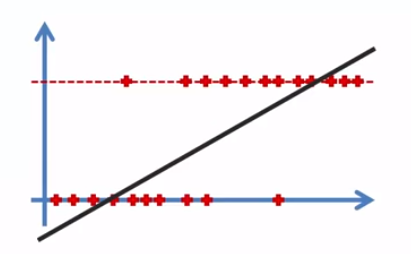
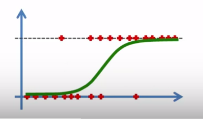

Here is my practice with the infamous Titanic dataset. I got to an F1 score of 84%, which is pretty good!
Link: Titanic Notebook
The Titanic Kaggle dataset is a simple introductory machine learning dataset. I used logistic regression for this model.
Summary:
1: Replaced the null data in the 'Age' column of the training data. Because there are null values, I have the option of either dropping them or filling them in with a reasonable value. I used Pandas' groupby function to calculate the mean age of survival for each pclass in the dataset.
2: Dropped the null data in the 'Cabin' column of the training data. There are too many null values and I cannot replace them with any reasonable data, so I cannot really do anything with it.
3: Graphed survival, survival by gender, survival by class, distribution by age, number of siblings and spouses, and ticket fare adjusted for inflation.
4: Used Pandas' get_dummies function to assign boolean values to 'Sex', 'Embarked', and 'Pclass' columns, which will be useful for the logistic regression model later.
5: Used scikit-learn's train_test_split and logisticregression functions to complete the model.
6: Done! :-)
Logistic regression: essentially using the best fitting line for boolean values.
Quick Logistic Regression Overview:
The linear function is defined as: $$y= B_0 + B_1X$$
Linear graph:
We then use y from the linear regression to plug into the sigmoid function:
Sigmoid function: $$p = {{1}\over{1+e^{-y}}}$$We then plug in p into:
$$ln({{p}\over{1-p}})=B_0 + B_1X$$Which turns into:
Logistic Graph: